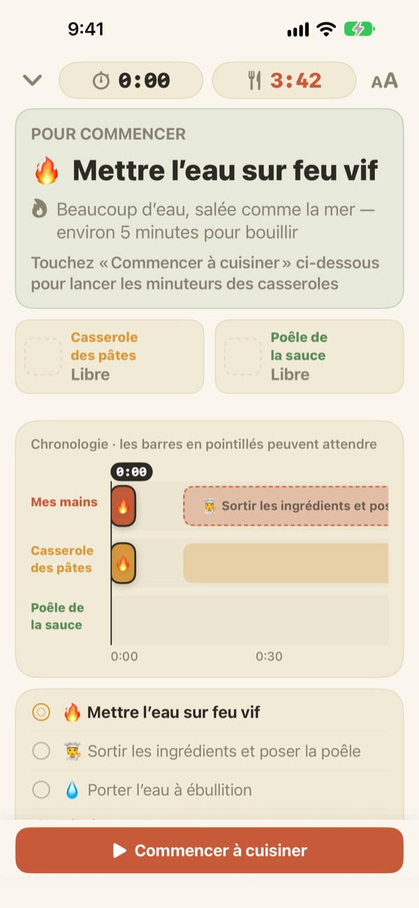
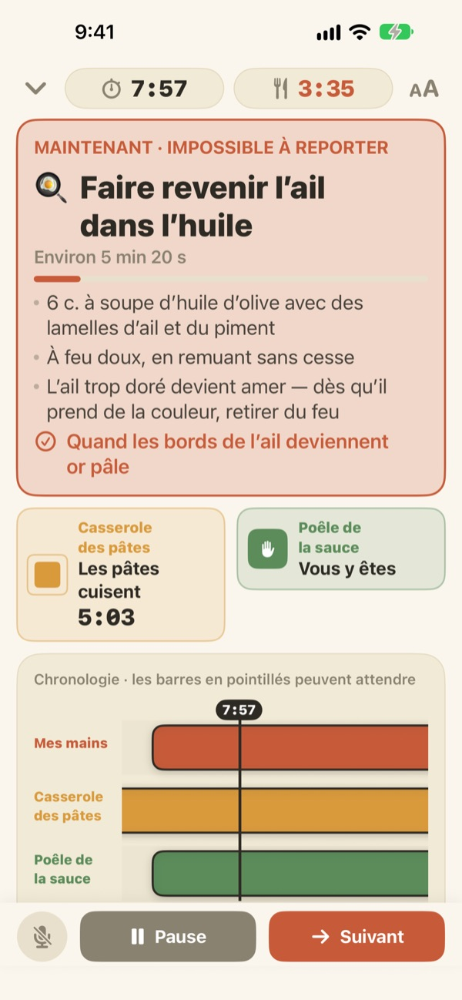
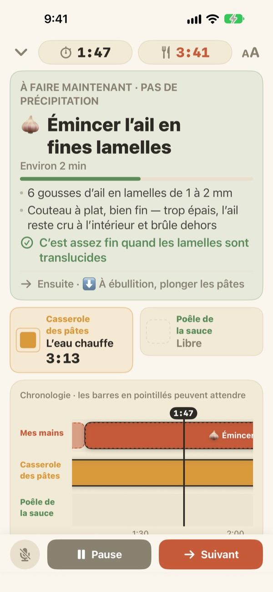
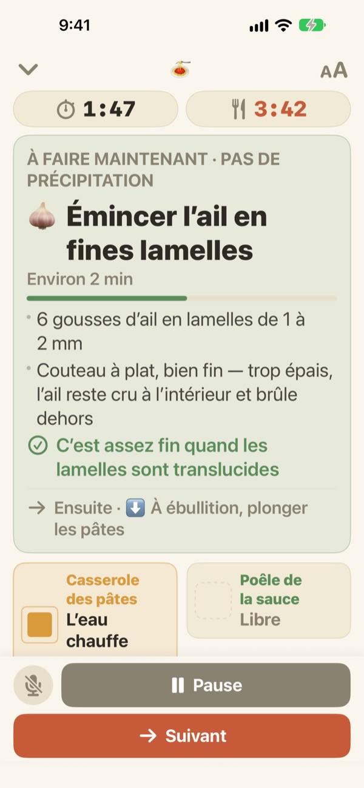

Les pâtes cuisent.
La sauce suit, en même temps.
Quand deux casseroles avancent à des rythmes différents, Geusaie affiche en grand la seule chose que vos mains doivent faire maintenant. La sauce est calée à rebours sur le moment où les pâtes sortent de l’eau.
Toutes les fonctions sont gratuites. Aucun compte requis.

Essayez
Préparez des pâtes aglio e olio en accéléré, 20 fois plus vite. Touchez « Commencer à cuisiner », puis « Suivant » chaque fois que vous auriez fini une tâche. Regardez comment la carte change quand il est temps d’égoutter les pâtes.
Trois minuteurs lancés, et les pâtes trop cuites quand même ?
Un minuteur pour les pâtes, un pour la sauce, l’ail en tête, et on ne sait plus ce qui passe en premier. Vous êtes en train d’émincer quand il faut égoutter, et la sauce arrive deux minutes trop tard. Geusaie connaît la recette sous la forme « ceci, puis cela » et ne vous indique que la chose à faire maintenant.
Ce qui ne peut pas attendre passe au rouge
Égoutter les pâtes, l’ail sur le point de brûler : quand une tâche gâcherait le plat si elle prenait du retard, la carte devient terre cuite et vous dit de laisser la planche de côté.
Quand une casserole est prête, une notification vous prévient même si vous ne regardez pas l’écran, avec la tâche à faire tout de suite.

La découpe se glisse dans les temps morts
Émincer l’ail, râper le fromage, peser : rien de tout cela n’est minuté, alors Geusaie ne décompte pas les secondes. La barre se remplit quand vos mains sont libres, s’arrête quand une casserole vous appelle et reprend là où vous en étiez.
Vous allumez le feu trois minutes en retard ? Tout ce qui suit glisse de trois minutes. Le planning est recalculé à partir de ce que vous avez vraiment fait.

Posé sur le plan de travail, piloté à la voix
Quatre tailles de texte pour lire à un ou deux pas de distance, et l’écran reste allumé pendant la cuisson.
Les mains mouillées ? Dites suivant et l’app passe à la tâche suivante sans que vous touchiez l’écran.

Trois étapes pour passer à table
- 1
Choisissez un plat
Vous voyez le temps approximatif et le nombre de casseroles nécessaires.
- 2
Touchez « Commencer à cuisiner »
La première tâche s’affiche, et les minuteurs des casseroles démarrent dès que vous touchez.
- 3
Fini ? Suivant.
Touchez le bouton ou dites « suivant », et la tâche suivante apparaît.
La couleur indique l’urgence
- Vert
- Préparation. Prenez votre temps.
- Moutarde
- Une casserole vous attend. C’est maintenant, mais sans urgence.
- Terre cuite
- Si vous attendez, les pâtes seront trop cuites ou l’ail brûlera. C’est maintenant.
- Cases des casseroles
- Le carré qui rétrécit, c’est le temps restant. Le temps des casseroles n’est jamais caché.
Sur la frise, les barres en pointillés sont les tâches qui peuvent attendre.
Toutes les fonctions sont gratuites
Gratuit
- Les deux recettes
- Un minuteur par casserole et la frise complète
- Une notification quand une casserole est prête
- « Suivant » à la voix
- Quatre tailles de texte
- Ouvrir une recette avec Siri ou Raccourcis
Soutenir le développeur (facultatif)
- Si l’app vous rend service, vous pouvez laisser un petit pourboire depuis les réglages
- Un pourboire ne débloque rien. Sans lui, toutes les fonctions restent à vous
Des pourboires ponctuels, pas un abonnement.
Ni compte, ni publicité, et l’app fonctionne sans connexion Internet.
Questions fréquentes
Je dis « suivant » mais rien ne se passe.
Le bouton micro en bas à gauche est rouge quand l’app écoute et gris quand il est coupé. Autorisez le micro et la reconnaissance vocale la première fois. Si vous avez refusé, réactivez-les dans Réglages > Geusaie. L’app écoute le mot écrit sur son bouton Suivant. Dans une cuisine très bruyante, touchez simplement « Suivant ».
Une casserole est prête mais je n’ai pas reçu de notification.
Vérifiez que les notifications sont activées dans Réglages > Notifications > Geusaie. Un mode de concentration peut les rendre silencieuses. Les notifications n’arrivent que lorsqu’une casserole est prête : la préparation ne vous presse jamais.
Que devient le planning si je commence en retard ?
Il est recalculé à partir de ce que vous avez réellement fait. Si vous allumez le feu trois minutes plus tard, tout ce qui suit est décalé de trois minutes, et la sauce reste calée à rebours sur la sortie des pâtes.
Le texte est trop petit.
Sur l’écran de cuisson, touchez le bouton de taille du texte en haut à droite et choisissez Normal, Grand, Plus grand ou Très grand. Votre choix est mémorisé.
L’écran s’éteint-il pendant la cuisson ?
Non. L’écran reste allumé pendant que vous cuisinez, pour ne jamais avoir à le toucher avec les mains mouillées.
Quels plats sont proposés ?
Des pâtes aglio e olio (environ 15 minutes, 2 casseroles) et des pâtes crémeuses à la tomate (environ 20 minutes, 2 casseroles), d’après des recettes de Serious Eats, Gimme Some Oven, RecipeTin Eats et The Burnt Butter Table. Tout plat avec deux casseroles en même temps s’y prête : dites-nous ce que vous aimeriez voir.
Ma voix est-elle enregistrée ?
Non. L’app n’écoute que le mot « suivant » et n’enregistre ni ne conserve aucun son. Si votre appareil le permet, la reconnaissance se fait sur l’appareil. Aucune donnée personnelle n’est collectée.
Puis-je l’ouvrir avec Siri ?
Oui. Choisissez un plat dans Siri ou l’app Raccourcis, et son écran de cuisson s’ouvre aussitôt. Les minuteurs démarrent quand vous touchez « Commencer à cuisiner », une fois prêt à mettre l’eau à chauffer.
Sur quels appareils fonctionne-t-elle ?
Sur iPhone et iPad avec iOS 17 ou version ultérieure. Ni compte ni connexion Internet requis.
Comment signaler un problème ou proposer une recette ?
Passez par Réglages > Envoyer un commentaire dans l’app, ou écrivez à l’adresse ci-dessous. Indiquez le modèle de votre appareil et la version d’iOS pour un traitement plus rapide. Nous répondons généralement en quelques jours.
Un blocage, un bug ou une recette en tête ? Écrivez à leeo@kakao.com.